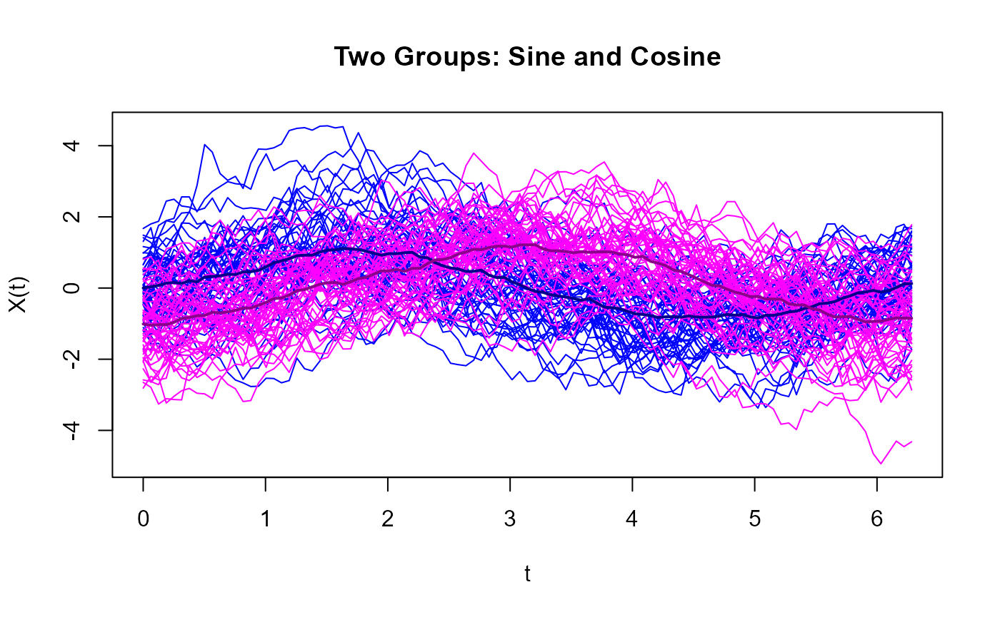
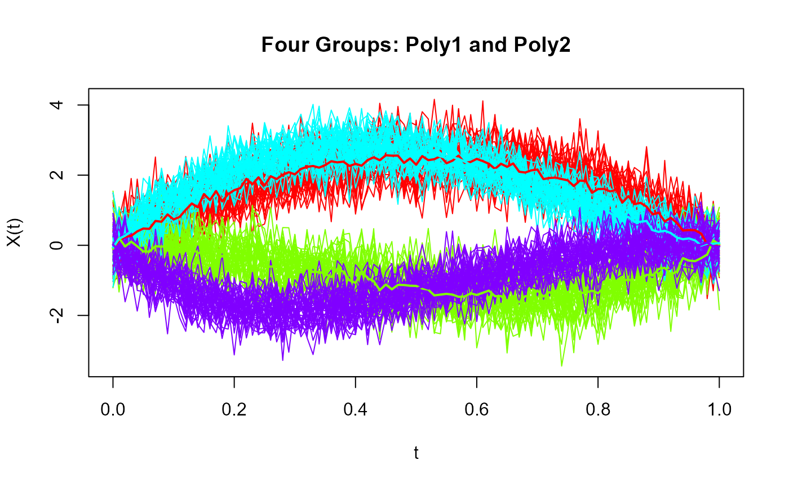

Simulating Functional Data for Clustering with `fda.clust`
Manuel OViedo (UDC), Manuel Febrero (USC)
Simulations.RmdIntroduction
The fda.clust package provides tools to simulate
functional data with specific latent processes and clustering
structures. This document demonstrates the use of key simulation
functions: rprocKclust, rprocKmu,
rproc2clust, and rproc2mu.
Simulating Functional Data for Two Groups (Sine and Cosine Processes)
The rproc2clust function generates functional data for
two distinct groups, each with specific latent processes.
library(fda.clust)
t <- seq(0, 2 * pi, length.out = 101)
# Generate latent processes
latent_mu <- rproc2mu(t, process1 = "sin", process2 = "cos",
c.1 = 1, c.2 = -1)
# Simulate functional data for two groups
group_data <- rproc2clust(n.1 = 50, n.2 = 50,
mu.1 = latent_mu$mu.1, mu.2 = latent_mu$mu.2,
s.1 = "vexponential", s.2 = "vexponential")
plot(group_data$X, col = group_data$colors, main = "Two Groups: Sine and Cosine")
lines(group_data$X.hat, lwd = 2, col = group_data$color)
Simulating Functional Data for Four Groups (Poly1 and Poly2 Processes)
The rprocKclust function creates functional data by
combining latent processes and noise for multiple groups.
t <- seq(0, 1, length.out = 101)
clustering_data <- rprocKclust(t,
n = c(40, 40, 40, 40),
process = c("poly1", "poly1", "poly2", "poly2"),
c = c(10, -10, 15, -15),
k = c(1, 2, 1.5, 2.5),
s = c(0.3, 0.3, 0.2, 0.2))
plot(clustering_data$X, col = clustering_data$colors, main = "Four Groups: Poly1 and Poly2")
lines(clustering_data$X.hat, lwd = 2, col = clustering_data$color)
Customizing Simulations
The rproc2clust function allows customization of the
noise structure by specifying parameters such as par.list.1
and par.list.2.
par.list.1 <- list(scale = 0.8, theta = 0.3, H = 0.5)
par.list.2 <- list(scale = 0.2, theta = 0.3, H = 0.5)
custom_group_data <- rproc2clust(n.1 = 50, n.2 = 50,
mu.1 = latent_mu$mu.1,
mu.2 = latent_mu$mu.2,
s.1 = 1, s.2 = 1.5,
par.list.1 = par.list.1,
par.list.2 = par.list.2)
plot(custom_group_data$X, col = custom_group_data$colors, main = "Custom Noise Structure")
lines(custom_group_data$X.hat, lwd = 2, col = custom_group_data$color)